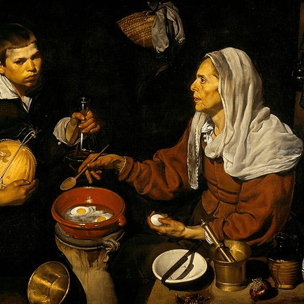

第50卦 火風鼎：火煉過的樣子
上卦：火（☲） ・ 下卦：風（☴）

核心意義
鼎是國之重器，用以烹煮養人、承載文明。此刻的你正處於穩固與更新的交匯點：像鼎一樣站穩腳跟、涵養實力，同時讓新的養分進入生命；穩固而不僵化，更新而不浮躁，大器自然養成。
「我以鼎立之姿穩固根基，在涵養與更新中成就大器。」
祝福
願你在生命的淬煉中，慢慢被塑造成更穩重、更有力量的自己。
五大類別指引
感情
關係需要像鼎一樣的穩定與涵養。給彼此安定的歸屬感，也持續注入新的養分。用心經營生活的細節、一起創造共同的回憶，讓關係在穩固中不斷更新，歷久彌新。
用心經營生活細節，給彼此安定感：
- 一起創造共同的回憶與儀式。
- 讓關係在穩固中歷久彌新。
事業
你正處於養成實力的階段，像鼎一樣需要時間與火候。根基打得越穩，將來發揮的空間越大；專注涵養專業、建立可長可久的架構，讓自己成為團隊與客戶信賴的重器。
專注涵養專業，建立可長可久的架構：
- 根基越穩，發揮的空間越大。
- 讓自己成為值得信賴的重器。
健康
身體需要滋養與更新的平衡，像鼎中烹煮的養生之味。選擇真正有營養的食物、建立恢復活力的作息；讓好的養分進入、讓廢物與壓力排出，身體自然氣血調和。
選擇真正有營養的食物與作息：
- 讓好的養分進入，讓廢物排出。
- 身體的調和來自日積月累。
財運
財務需要像鼎一樣的穩固結構，收支分明、根基厚實。先建立清楚的財務架構，再談投資與增長；讓收入、儲蓄與支出各安其位，財務的鼎立穩固了，才能承載更大的豐盛。
建立清楚的財務架構，收支分明：
- 先穩固再談增長與投資。
- 讓財務的鼎立承載更大的豐盛。
人際
你正成為他人眼中值得信賴的存在，像鼎一樣承載著眾人的期待。這份信任需要以真誠回報；說到做到、穩穩承接，同時持續充實自己，讓自己值得這份倚重。
真誠回報每一份信任與倚重：
- 說到做到，穩穩承接。
- 持續充實自己，值得這份期待。